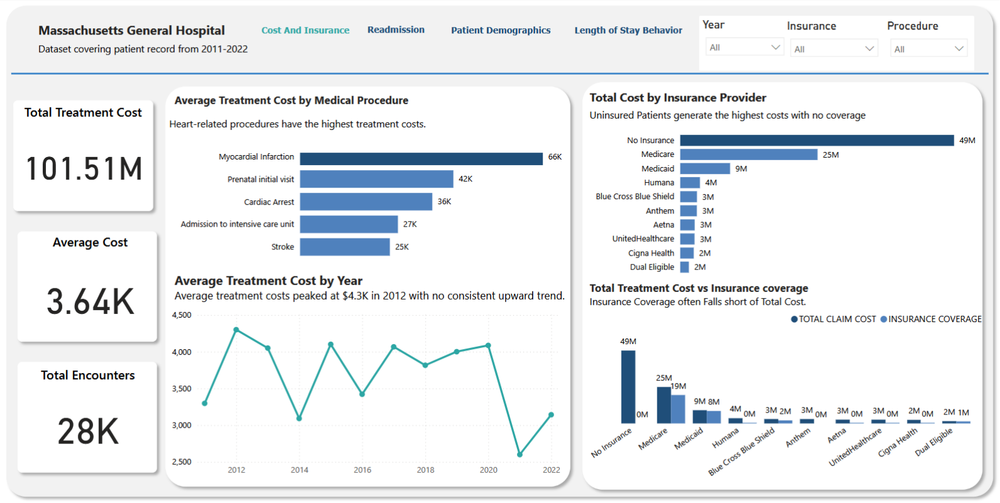

I build Power BI dashboards and analyze datasets to help teams understand what's happening in their business — and what to do next. Currently looking for data analyst opportunities where I can apply and grow these skills.
WHAT I DO
Currently working as a Data Analytics Instructor and volunteer mentor, alongside hands-on project work in dashboarding and analysis.
Interactive, multi-page Power BI dashboards built from your raw data — covering KPIs, trends, and drill-down analysis tailored to your specific business questions.
End-to-end analysis using SQL, Excel, and Power Query — cleaning, transforming, modeling, and surfacing insights that are accurate and decision-ready.
Translating complex findings into clear stakeholder-ready presentations and reports — bridging the gap between data and decision-makers at every level.
Currently teaching Power BI, Excel, SQL, and DAX to aspiring analysts, and mentoring learners through Skills To Career — covering real-world workflows from data cleaning to dashboard delivery.
Built during my mentorship with Skills To Career, this project analyzed 28,000+ patient encounter records (2011–2022) from Synthea, a publicly available synthetic healthcare dataset, to explore cost drivers, readmission risk, and length-of-stay patterns. Presented as a 4-page interactive Power BI report and awarded Best Presentation among program mentees.

Analyzed 28,000+ synthetic patient encounters (2011–2022) to uncover cost drivers, readmission risk, demographic patterns, and length-of-stay behaviour across a 4-page interactive Power BI report.
SOCIAL PROOF
What mentors, colleagues, and students say about working with me.
Abigail demonstrated outstanding analytical thinking and an impressive ability to communicate complex data findings clearly. Her healthcare dashboard project stood out for its depth, accuracy, and the quality of her recommendations.
What stood out in Abigail's class was how she broke down complex DAX formulas into steps I could actually follow. She is patient, knowledgeable, and genuinely invested in helping learners succeed.
LET'S WORK TOGETHER
Looking for remote or Lagos-based opportunities where I can apply my Power BI, SQL, and data storytelling skills — and keep growing as an analyst.